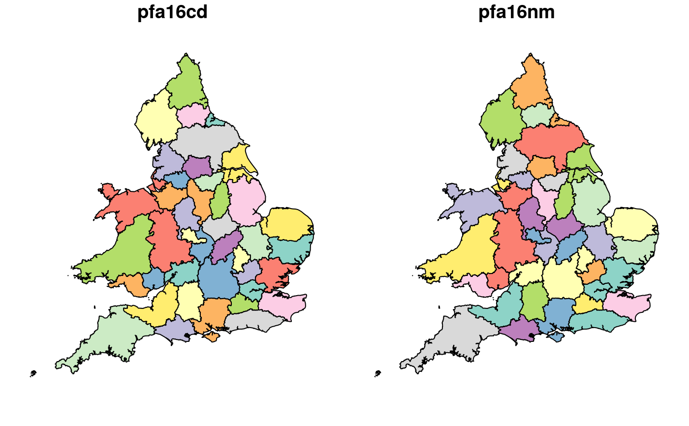

police_boundaries.RdThis dataset represents the 43 police forces in England and Wales. These are described on the Wikipedia page. on UK police forces.
An sf data frame
The geographic boundary data were taken from the UK government's official geographic data portal. See http://geoportal.statistics.gov.uk/
These were generated using the script in the
data-raw directory (misc.Rmd file) in the package's GitHub repo:
github.com/ITSLeeds/stats19.
nrow(police_boundaries)#> [1] 43police_boundaries[police_boundaries$pfa16nm == "West Yorkshire", ]#> Simple feature collection with 1 feature and 2 fields #> geometry type: MULTIPOLYGON #> dimension: XY #> bbox: xmin: 388662.6 ymin: 402593.5 xmax: 452991.6 ymax: 451901.4 #> epsg (SRID): 27700 #> proj4string: +proj=tmerc +lat_0=49 +lon_0=-2 +k=0.9996012717 +x_0=400000 +y_0=-100000 +ellps=airy +towgs84=446.448,-125.157,542.06,0.15,0.247,0.842,-20.489 +units=m +no_defs #> # A tibble: 1 x 3 #> pfa16cd pfa16nm geometry #> <chr> <chr> <MULTIPOLYGON [m]> #> 1 E23000010 West Yorks… (((408054.7 451818.9, 408045.8 450915.7, 408358.1 44989…